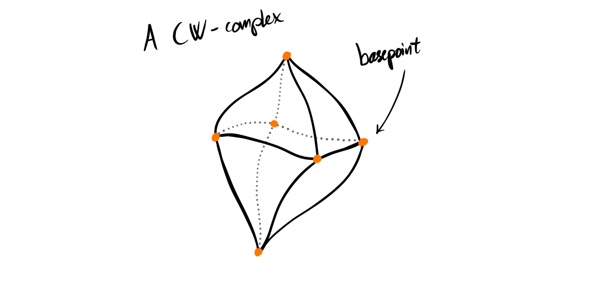
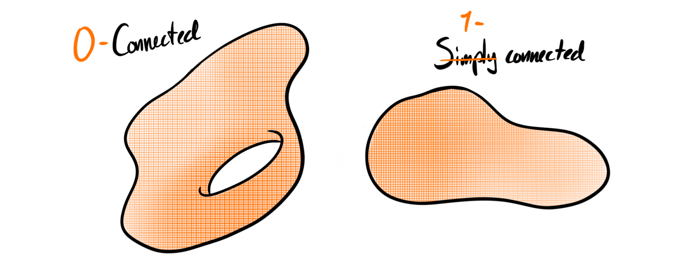
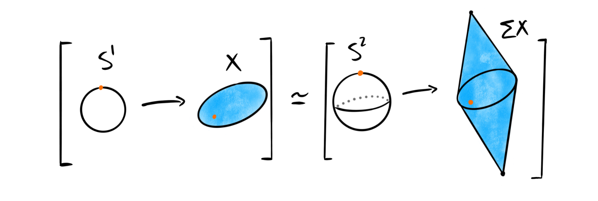

For the last few posts we have covered some theory surrounding cohomology theories, and today we want to do something else, namely again look at some homotopy theory. It’s been a long time since we have covered homotopy groups, but today we return once again. In particular I want to cover a theorem and its consequences — the Freudenthal suspension theorem. This is one of the central theorems in the homotopy theory of topological spaces, and is one of the more important theorems we left out from the fibration series. In fact, we actually used it, or at least almost when we said: “Hence the suspension functor should shift the degrees of the homotopy groups up by one” in this post. Today we make this precise, and look at a cool thing that happens as a consequence of this.
The first thing to note is that we will not cover the definition and elementary theory of homotopy groups of topological spaces, as we have already done so in the past. We assume forward that topological space means pointed CW-complex, because this is where we define things. We can then define things generally for all topological spaces through the CW-approximation theorem and adding a disjoint base point, but this is not that important for us today.

Motivation and preliminaries
There are several ways to motivate the Freudenthal suspension theorem, which is this posts main star. I have chosen the one below as it highlights some duality and some questions that doesn’t often get asked. It is not a standard motivation, and it shouldn’t be, because it comes from not the best and most correct place. Nonetheless I like it because it connects to some theory we did on this blog over a year ago. This means in particular that any reader should not use this as some rigorous motivation. Anyway…
Recall that a fiber sequence is a sequence $F\overset{i}\longrightarrow E\overset{f}\longrightarrow B$ of topological spaces $F, E, B$, where $f$ is a fibration and $i$ is the inclusion of the fiber of $f$. Such a sequence induces a long exact sequence of homotopy groups
$$\cdots\to \pi_{n+1}(B)\to \pi_n(F)\to \pi_n(E)\to \pi_n(B)\to \cdots$$
If we use the loop space fibration $\Omega X\longrightarrow PX\longrightarrow X$ we get the exact sequence
$$\cdots\to \pi_{n+1}(X)\to \pi_n(\Omega X)\to 0\to \pi_n(X)\to \cdots$$
because the path space $PX$ is contractible. This means in particular that we have isomorphisms
$$\pi_{n+1}(X)\cong \pi_n(\Omega X)$$
In the post about cofibrations we uncovered the dual statement, using cohomology. But, we might wonder if we have even more “duality” or similarities, for example dual isomorphisms $\pi_{n+1}(\Sigma X)\cong \pi_n(X)$? I need to state firmly that this is not just the dual statement of the above isomorphisms. The dual statement really is that $H^{n+1}(\Sigma X)\cong H^n(X)$, and we can’t reason by duality inside the homotopy groups themselves. Asking for such an isomorphism would be dual to asking wether $H^{n}(\Omega X) \cong H^{n+1}(X)$, which is not at all true in general. That said, it is perhaps natural to still wonder.. And we will see that this wondering — this duality dream — is in fact true, at least if our space $X$ is highly connected. Let’s recap what this means.
Definition ($k$-connected): A topological space $X$ is called $k$-connected if $\pi_i(X)=0$ for all $0\leq i\leq k$.
This generalizes the more standard notions of being connected and simply connected, as these now simply become $0$-connected and $1$-connected respectively.

Recall that suspensions of spheres are again spheres, i.e. that $\Sigma S^n \simeq S^{n+1}$. If we now take a topological space $X$, this means that we have an isomorphism $[\Sigma S^n, \Sigma X]\cong [S^{n+1}, \Sigma X]$ between the sets of homotopy classes of maps. As we implicitly are working with pointed CW complexes, the set on the right is actually the $(n+1)$‘st homotopy group of $\Sigma X$. This means that we have a map
$$\pi_n(X) = [S^n, X]\overset{\Sigma}\longrightarrow [\Sigma S^n, \Sigma X]\cong [S^{n+1}, \Sigma X] = \pi_{n+1}(\Sigma X)$$
defined by sending a homotopy class $[f]$ to the class $[\Sigma f]$. Notice that this is exactly what we wanted, which means that the uncertain duality statement above at least makes some sense!
The Freudenthal suspension theorem
Now all we need in order to have our dream pseudo-duality mentioned above, is that these maps are isomorphisms in the case of highly connected spaces, which is exactly what the Freudenthal suspension theorem tells us.
The Freudenthal suspension theorem: Let $X$ be a $k$-connected topological space. Then the above map $\pi_n(X)\longrightarrow \pi_{n+1}(\Sigma X)$ is an isomorphism for $n<2k+1$ and a surjection for $n=2k+1$.
In particular this means that the suspension of a space always has higher connectivity than the space itself, i.e. suspension increases connectivity. We won’t give a proof of the theorem here, as it would require to go into much other details, and this is not what we are interested in. We are interested in what we can use the theorem for.

The immediate thing to always look into when we discover some relation on homotopy groups is wether it can give us homotopy groups of spheres. This seems very much to be the case with the Freudenthal suspension theorem. For example $S^3$ is $2$-connected, so for $n<5$, say $n=4$ the theorem gives us an isomorphism
$$\pi_4(S^3)\overset{\cong}\longrightarrow \pi_5(S^4),$$
where we have used the fact mentioned earlier that $\Sigma S^3 \simeq S^4$. Recall that we computed $\pi_4(S^3)$ last year by a lot of machinery: long exact sequences, spectral sequences, the universal coefficient theorem and the Hurewicz theorem. In the end we got that $\pi_4(S^3)\cong \mathbb{Z}/2$, which means that we now also know that $\pi_5(S^4)\cong \mathbb{Z}/2$. This means that we have computed three non-trivial homotopy groups of spheres on this blog, not a bad feat considering their notoriety!
As the suspension increases connectivity, and $S^1$ is $0$-connected, this means that $S^{k+1}$ is $k$-connected. This allows us to compute $\pi_k(S^k)$ for all $k$ by using the Freudenthal suspension theorem! From the theorem we get isomorphisms
$$\pi_k(S^k)\overset{\cong}\longrightarrow \pi_{k+1}(S^{k+1})$$
for all $k>0$. Since we know that $\pi_1(S^1) \cong \mathbb{Z}$ we get that $\pi_k(S^k)\cong \mathbb{Z}$ for all $k$. As the spheres are suspensions of lower spheres we can even state this in terms of $S^0$:
$$\pi_k(\Sigma^k S^0)\overset{\cong}\longrightarrow \pi_{k+1}(\Sigma^{k+1}S^0)$$
Now that is interesting! We can even extend this further, as the Freudenthal suspension theorem actually gives us isomorphisms for all $n < 2k-1$ as $\Sigma^k S^0$ is $(k-1)$-connected. Hence we have isomorphisms
$$\pi_n(\Sigma^k S^0)\overset{\cong}\longrightarrow \pi_{n+1}(\Sigma^{k+1}S^0)$$
for all $n<2k-1$. This is not a result that holds only for spheres. Notice that as long as we suspend a space $X$ enough times, say $\Sigma^k X$, then it must be $(k-1)$-connected. Hence we have isomorphisms
$$\pi_n(\Sigma^k X)\overset{\cong}\longrightarrow \pi_{n+1}(\Sigma^{k+1}X)$$
for all $n<2k-1$ for all topological spaces $X$. This is often reformulated as the following: For any topological space and natural numbers $a, b$ such that $b<a-1$, we have an isomorphism
$$\pi_{a+b}(\Sigma^a X)\overset{\cong}\longrightarrow \pi_{a+b+1}(\Sigma^{a+1}X).$$
The stable homotopy groups
The above isomorphism is very important for algebraic topology, as it allows us to define the notion of stable homotopy. If we fix the natural number $b$ in the description above and allow the natural number $a$ to slowly increase from say $0$, we see that the homotopy groups $\pi_{a+b}(\Sigma^a X)$ and $\pi_{a+b+1}(\Sigma^{a+1} X)$ can vary wildly — until $a$ passes the “critical value”. This critical point happens when $a> b+1$. For all natural numbers higher than this critical value, the groups are forever after isomorphic. This is called the “stable behaviour” of the homotopy groups, and motivates the following definition.
Definition (Stable homotopy groups): Let $X$ be a topological space and $n\in \mathbb{N}$. The $n$'th stable homotopy group of $X$ is defined to be the group
$$\pi^S_n (X) := colim_a \pi_{n+a}(\Sigma^a X)$$
which we know by the above discussion is equal to $\pi_{2n+2}(\Sigma^{n+2}X)$.
The name comes from the intuition, i.e. that if we apply enough suspensions, the homotopy groups will stabilize and become the stable homotopy groups. A second intuition for the name is that stable homotopy groups are stable under suspension, i.e. $\pi^S_n(X) \cong \pi^S_{n+1}(\Sigma X)$. A cool feature of stable homotopy groups is that because the spaces $\Sigma^a X$ are all path connected, we don’t have to worry or bother about base points when working with stable homotopy groups. This is in stark contrast to normal homotopy groups, where they are important. But as we have hidden this feature of the homotopy groups in this blog post (as we said topological space would mean pointed CW-complex) this doesn’t really add anything for this post.
So, why is this even interesting? We saw above that the stable homotopy groups of the spheres are much better behaved than the general homotopy groups, so this is one reason we are interested in them as they are simply easier to calculate and often easier to understand. The second thing relates more to the several other posts we have had lately, namely trying to define the stable homotopy category as the homotopy category of spectra. From the fibration series we know that to create a homotopy category we need a model structure on our category. We want the homotopy category of this model category — the stable homotopy category — to be a tensor triangulated category, as we mentioned this category as an example in the post where we defined them. To make it so we need to have a so called stable model structure on it. Because, as a general fact, the homotopy category of a stable model category is always canonically triangulated. The tensor structure is a bit more involved and difficult, so we need to work up to it a bit, but very soon we will define the stable model category of spectra. This stable model structure actually requires the use of stable homotopy groups, hence also the interest in defining them here today.
The last reason we will mention today — there are of course many more — as for why these groups are interesting is that they give us very nice functors
$$\pi^S_n:CW_\ast\longrightarrow Ab.$$
These functors are so nice that they make up a reduced homology theory! When first encountering homology and homotopy one learns very quickly that these are similar, but still very different invariants. Normal homotopy does not satisfy all the Eilenberg-Steenrod axioms for a homology theory, but, now that we look at stable homotopy instead, it actually satisfies them all. This has some nice benefits, for example the theory of stable homotopy now corresponds to a spectrum. This spectrum is of course the sphere spectrum $\mathbb{S}$, which we will meet again later.

Next time we will hopefully be ready to define the stable homotopy category, and maybe even look at its triangulated structure. There are many interesting things to look at further into stable homotopy theory, which we absolutely will do, so stay tuned!